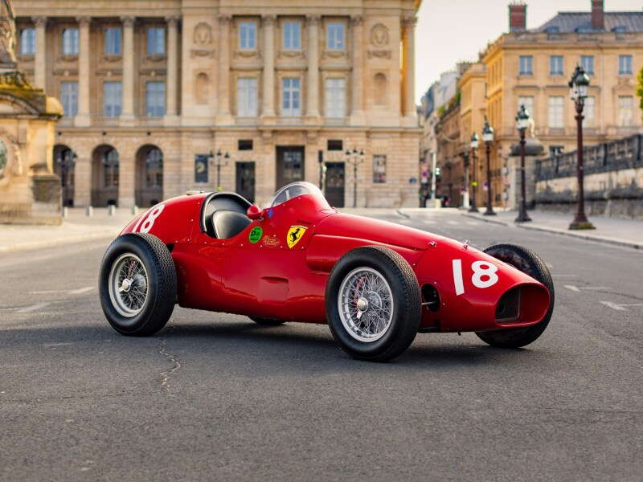

The Birth of Formula One: 1950
The Formula One World Championship was officially established in 1950. The first race, the British Grand Prix at Silverstone, marked the beginning of what would become the premier class of single-seater racing. In these early years, Italian teams like Alfa Romeo and Ferrari were dominant, with drivers such as Giuseppe Farina and Juan Manuel Fangio becoming legends of the sport. The history of Formula One is a testament to the sport’s evolution and enduring appeal. From its origins in the 1950s to the modern hybrid era, F1 has continuously pushed the boundaries of technology, competition, and entertainment. As the sport continues to grow and innovate, its rich history provides a foundation for future successes and milestones.
Key Moments and Milestones
Significant advancements in safety, such as the introduction of the halo device and improvements in crash barriers, have enhanced driver protection and response to accidents. Memorable races, such as the 1976 German Grand Prix at the Nürburgring, where James Hunt and Niki Lauda’s fierce battle captivated fans, are etched in F1 history.
Notable figures

Juan Manuel Fangio: Known as “El Maestro,” Fangio’s dominance in the 1950s set high standards for driving excellence.
Ayrton Senna: A three-time World Champion, Senna’s skill, charisma, and tragic death in 1994 left an indelible mark on the sport.
Michael Schumacher: With seven World Championships, Schumacher’s era defined the early 2000s and remains a benchmark in F1 history.
The Golden Age (1960s-1970s)
The 1960s and 1970s saw significant technological progress. The introduction of rear-engine cars revolutionized the sport, with teams like Lotus and Ferrari leading the charge. This era was characterized by fierce rivalries and exceptional talent. Drivers like Jim Clark, Jackie Stewart, and Emerson Fittipaldi emerged as stars. The fierce competition between teams such as Ferrari, McLaren, and Lotus captivated fans.
The Turbo Era and Commercial Boom (1980s - 1990s)
The 1980s introduced turbocharged engines, increasing both speed and complexity. This era saw the rise of legendary drivers like Ayrton Senna and Alain Prost, who would become central figures in the sport’s history. The 1990s marked a period of commercialization and global expansion. Bernie Ecclestone’s influence transformed F1 into a global entertainment spectacle, increasing its reach and appeal.
The Modern Era (2000s - 2010s)
The early 2000s were dominated by Michael Schumacher, who secured seven World Championships and became one of the sport's greatest drivers. His success with Ferrari highlighted the era. Advances in technology, including the introduction of hybrid engines and enhanced safety measures, became prominent. Teams like Red Bull Racing and Mercedes began to establish themselves as dominant forces.